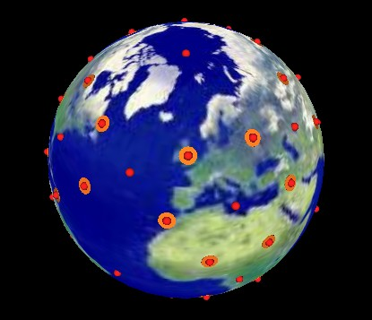
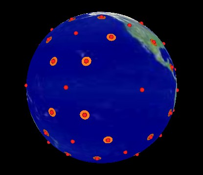

The Earth showing North Pole view....
Earth partially transparent. The 144 polyhedron can be seen within.
Octahedron vertex of the 144 is aligned with the North Pole.
Another vertex of the 144 is aligned with England.
The 48 "light cones" are added as orange circles.
One cone passing through England.
All vertices of the 144 are projected outward so that they are all
at the same distance from the center of the Earth. These are shown
as red spheres.
Earth made solid so the 144 is not seen. All vertices and light cone
locations remain visible.
Some different points of view....
Since the "light cones" are not evenly distributed over the surface of the
Earth, there is another orientation in which an Octahedron vertex is at the
North and South poles and which there is a light cone passing through England.
Here is this other orientation. (The 144 polyhedron has simply been rotated
on the North-South axis by 60 degrees.)
|
|

|
|
Figure #5 Old Orientation
|
Figure #12 New Orientation
|
Here are some different points of view using the new orientation.
|
|

|
|
Figure #9 Old Orientation
|
Figure #16 New Orientation
|
Also, when all the 144 vertices are projected onto a sphere, it is easy to
see its relation with the VE. Here are 2 illustrations in which I add 4
great circles to outline the VE's edges.
This shows that the 144 Poly can be constructed from
(and is within) a 3-frequency VE. (I am sure I've mentioned this on other
web pages.) (The vertex to vertex connections (edges) are changed to
form the 144, but not the vertex positions.)
Now recall that Nassim's 64 tetra-polyhedron can be formed by
adding a tetrahedron to each of a VE's 8 triangular faces. In this case,
the 144 Polyhedron would be contained within the 64 tetra-polyhedron.
(My previous comments indicated that the 64 is contained within the 144.
But, it can also be looked at from the point of view of the 144 within the 64.
Depends on the scale. Both of these polyhedra's vertices match the Isotropic
Vector Matrix (IVM) vertices, which is the FCC lattice.
The IVM is fractal, scale invarient, recursive, etc. so you will have the 144 and
64 at various levels/scales.)
Here is the 120 polyhedron. One of the Octahedron vertices is aligned with
The North pole. Another is aligned over England.
The 120 Polyhedron's vertices are projected onto the Earth.
Various points of view.